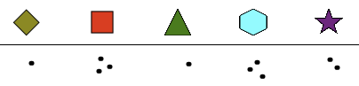
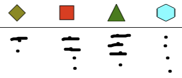
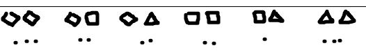
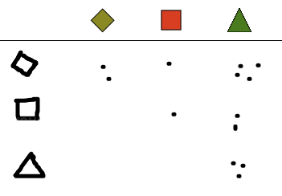
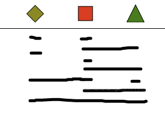

Lösning
För varje figur som går in i huset kan man rita en prick under motsvarande bild.
Det kan t.ex. se ut så här:

och betyder att man har sett 1 romb, 3 kvadrater, 1 triangel, 3 sexhörningar och 2 stjärnor gå in i huset.
För varje figur som går in i huset kan man rita en prick under motsvarande bild. För varje figur som lämnar huset kan man sedan stryka ett streck över pricken.
Det kan t.ex. se ut så här:

Tolkningen är att man har sett 2 romber gå in, varav en gått ut igen, att man sett 4 kvadrater gå in varav 2 gått ut igen, att man sett 4 trianglar gå in varav 3 gått ut igen, och att man har sett 4 sexhörningar gå in utan att någon av dem kom ut igen.
För att notera par av former som går in i huset finns det flera sätt. Här föjer tre användbara metoder.
Metod 1. Här tecknar man innan man börjar bilder av alla möjliga par. Detta tar lite tid, eftersom man måste rita 6x2 figurer, men sedan är det mycket enkelt att markera varje par som går in i huset med en prick. Det kan se ut så här :

Metod 2. Här kan man teckna bara 3 figurer i en lodrät rad för att få en "matris" där man kan markera paren. Det kan se ut så här:

Metod 3. Här behövs ingen förberedelse, utan man försöker markera paren som går in i huset genom streck mellan motsvarande figurer. Det kan se ut så här, där ett kort streck förstås betyder ett par av två lika figurer:

Denna metod kräver lite mer omsorg än de övriga för att snabbt bestämma när huset innehåller precis tre identiska par.
Det är datavetenskap!